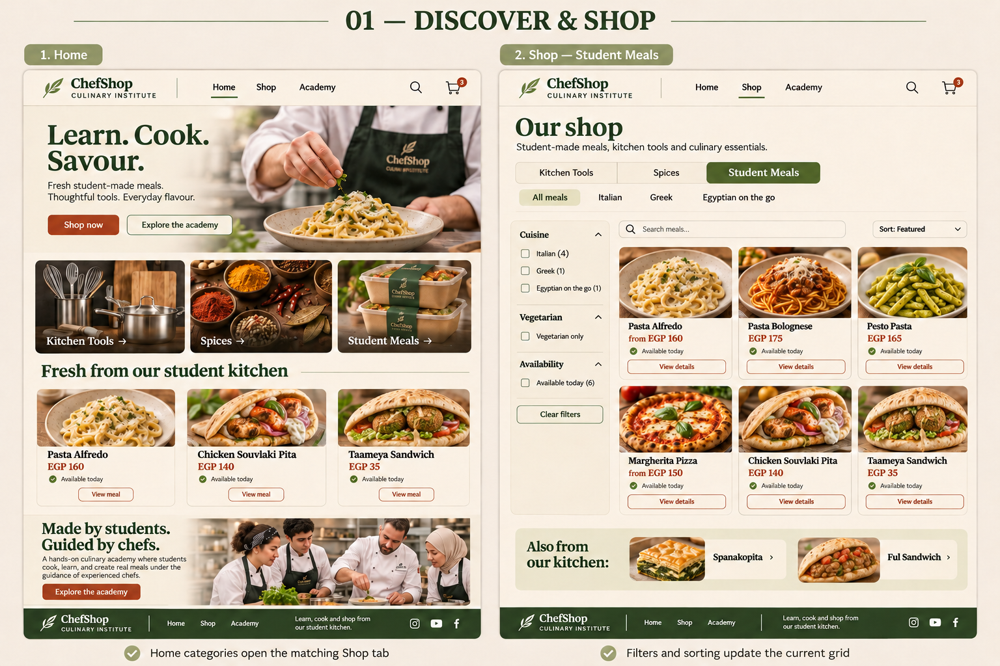
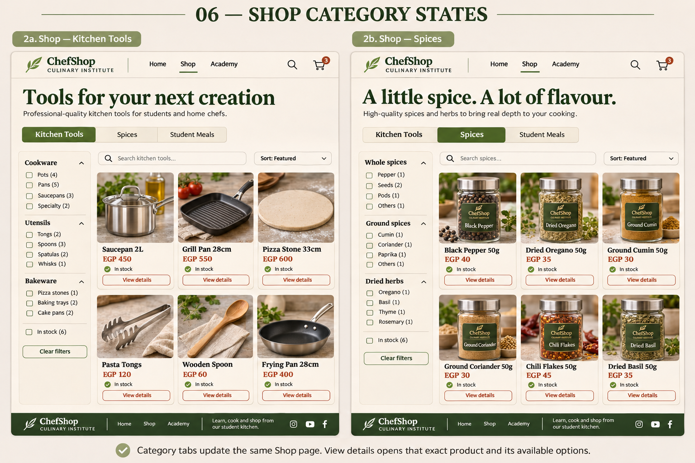
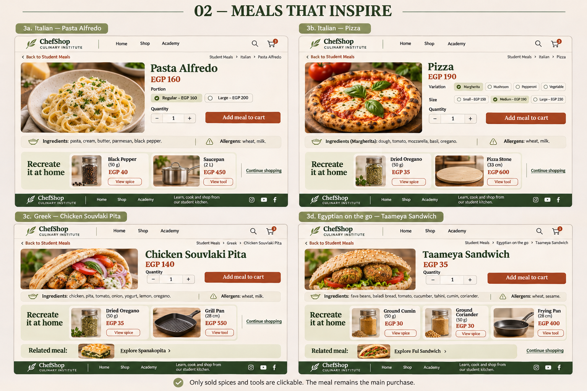
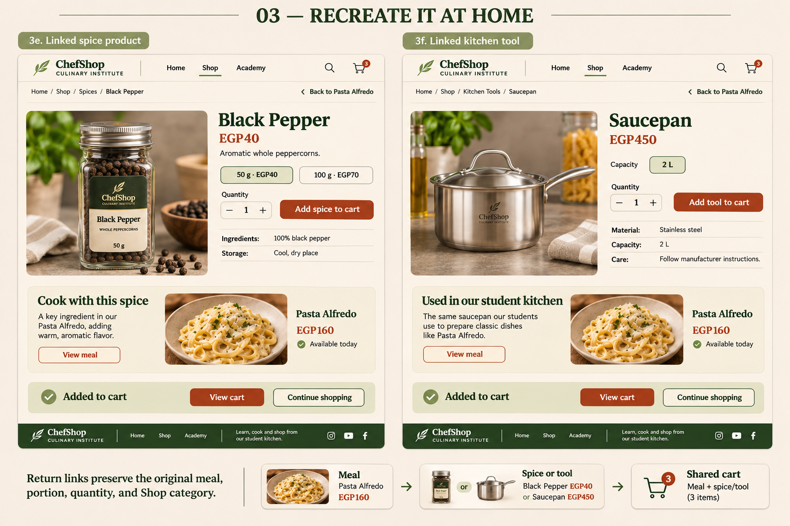
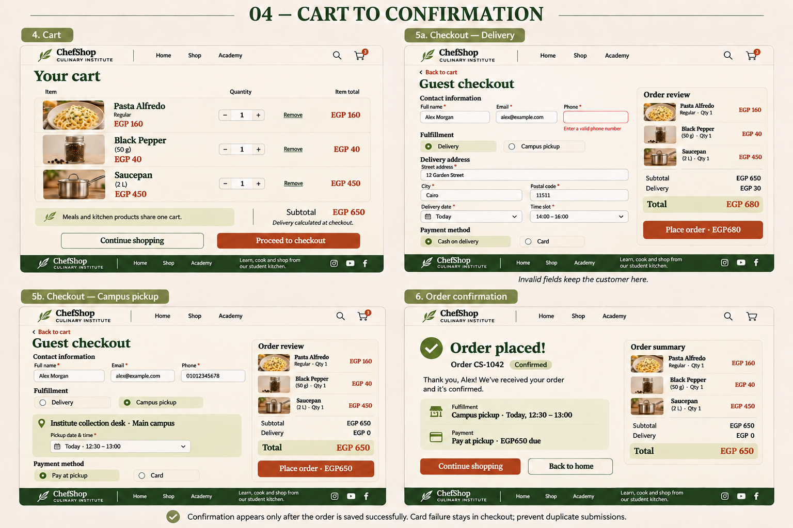
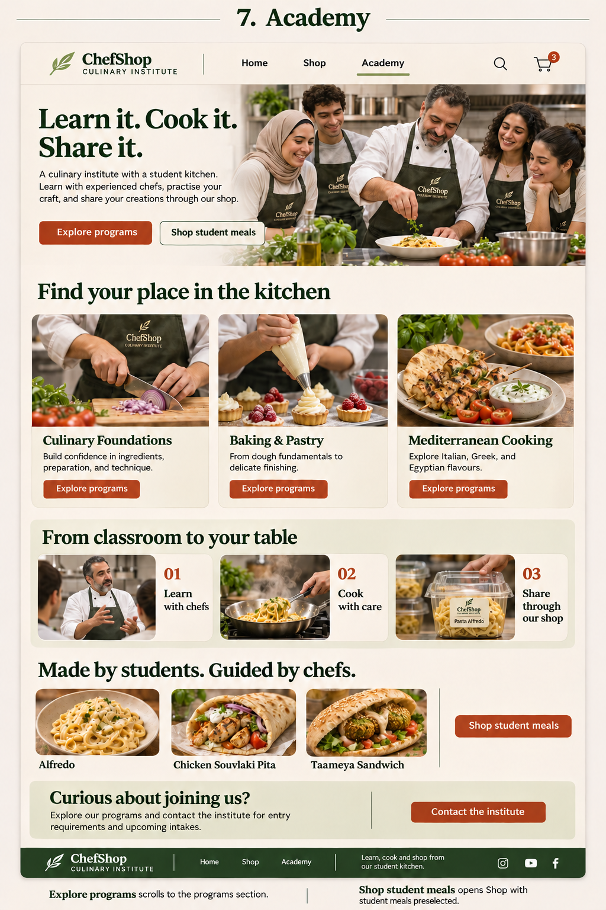
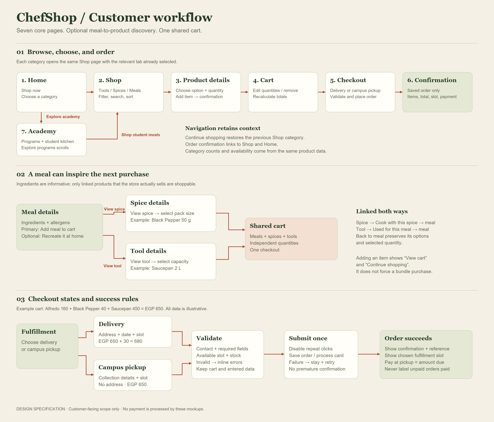

These are visual design concepts. Prices are illustrative EGP amounts. Click any board to view its full-resolution PNG. No website implementation or payment processing is included.
01 · Discover & shop
Home introduces the academy and the three shopping categories. Shop retains those categories and offers cuisine filters inside Student Meals.

Shop category states
Kitchen Tools and Spices use the same Shop page with category-specific filters and products.

02 · Meals that inspire
Four meal examples demonstrate portions, pizza variations, ingredients, allergens, and optional products customers can buy to recreate a meal.

03 · Recreate it at home
Spices and tools use the same product-details structure, with suitable options. Contextual return links connect them to the original meal.

04 · Cart to confirmation
One consistent example cart is shown through delivery and campus-pickup checkout. Validation and order failures retain the cart and entered information.

05 · The academy
The institute's story connects learning with the student kitchen and the store.

06 · The customer workflow
The exact click paths and state rules behind the screen concepts.

Final catalog counts, product photography, ingredients, allergens, stock and commercial prices should be verified against the institute's actual recipes and products. Small generated-image labels are concept copy; the interaction specification records precise behavior.